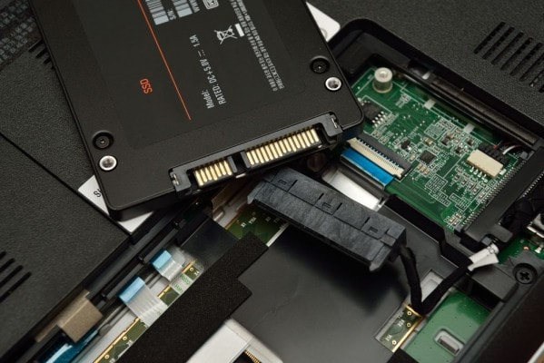
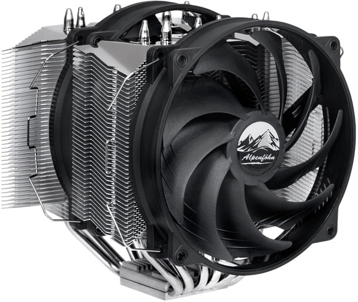
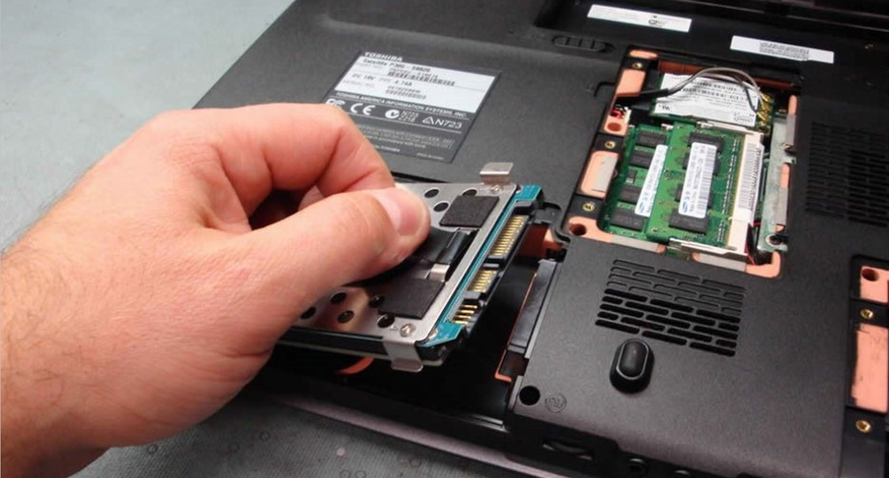

Project 2
Upgrading computers and laptops
Table of Contents
Upgrading your desktop

Desktop PCs are solid machines, but over time they can start showing their age. If your computer is running slowly, then it is time for an upgrade. Luckily, desktops are easily disassembled, making replacing parts pretty safe and simple. Here are some great options to give you old computer new life!
Part 1: Add or replace RAM

Adding RAM is one of the easiest and cheapest ways to speed up your sluggish computer. More RAM allows your computer to do more tasks at once, reducing the amount of time it takes to load.
If your computer has recently developed problems with connecting to anything, running out of space, or being very noisy, adding new RAM should suffice. If you spend more time fixing your computer rather than using it, it is time to replace your DIMMs entirely. An 8GB upgrade can cost you as little as $50.
Before buying RAM, make sure to check your motherboard's requirements in your manual. You must match the standard (DDR3, DDR4), speed (megahertz), and number of DIMMs (usually between two and eight). Keep in mind that some motherboards and CPUs also support triple, or quad channel RAM. This allows for much faster operation, but your RAM and MOBO must also support it.
When adding the new RAM to your computer, check your DIMM slots. In many cases you will have open slots where it is possible directly insert the new RAM. Otherwise, you can replace old DIMMs with new ones. If you are adding more consult you manual to see which slots you can use as each motherboard is different.
SDRAM is not an extension of the older EDO DRAM but rather a completely new type of DRAM. It is able to run up to 133 MHz.
DDR doubles the rate of data transfer of standard SDRAMs. It can run up to 333MHz and is 2.5 volts with 184 pins in the DIMMs. It is not compatible with SDRAM but uses a similar parallel bus.
RDRAM is slightly more expensive but has great capabilities. There are three types of RDRAM: PC600, PC700, and PC800. The new PC800 has double of the maximum capability of the older PC100 SDRAM.
Part 2: Replace your mechanical drive with an SSD
Replacing your old mechanical hard drive with a solid state drive is another easy method for improving your computer. Modern flash storages are much faster than old hard drives. While it is slightly more expensive, prices are dropping and there are many benefits, including faster boot-ups and general responses. The SSD is really the best choice if you don't want to spend much, but want all your day-to-day tasks sped up. SSDs will not help much with video editing or gaming (other than opening the program), but you will notice a huge speed bump in everything else.
Changing the storage drive is slightly more complicated than replacing RAM. You will need to connect the SATA power to the power supply and data cables to the motherboard, then transfer your operating drive to a new drive or install a new one. It's a good idea to back up your files to an external drive before the installation process.
Part 3: Get a new graphics card

All gamers know that having good graphics and running at a high frame rate is necessary for an enjoyable experience. Unfortunately, newer more complex games end up running at lower frame rates on your original graphic card. When this starts to become unbearable, it is time for an upgrade. To upgrade your computer, you can either implement multiple GPUs or swap out the old GPU for a brand new one.
Using multiple GPUs
Having multiple GPUs is a cheaper method for upgrading and getting a high-end computer. It usually boosts gaming performance by 60-70%. However, this only works with modern GPUs. For the setup, you will need to properly match second card with your current one. They must have the same GPU inside with the same amount of memory to be in full compatibility but do not need to be from the same manufacturer.
Limitations
Some GPUs are deliberately made to prevent people from doubling up, and not all motherboards are capable for supporting multiple graphics card. Even if they have spare PCIe slots, they do not always have the license to support Nvidia's SLI tech. AMD, though, has graphic slots that are CrossFire compatible.
Before installation, you will also need to make sure the graphic card is supported by your CPU. This means that another 100-300 watts of power headroom and power cables may need to be added. In the case that you need to upgrade to a new PSU, the cost may make the addition no longer worth it.
Many times, a duplicate is hard to find, possibly giving it a high price. Other times, certain GPUs are incompatible with games being played. Upgrading to a new GPU would be the cheaper option here. Simply look up all your parts, and see if they are compatible with SLI/crossfire before buying with this intent.
Installing SLI/Crossfire
To install multiple cards, you will need an SLI or crossfire bridge. This is often a soft, flexible cable that comes in the box with your motherboard. If you motherboard supports quad SLI/crossfire, it should come with a dual, triple, and quad bridge. Otherwise it would just come with a dual and a triple, or just a dual. You will need to consult your motherboard manual to see where to place the cards. You will want to choose the two highest speed slots, and place the cards in those. However, they need to be close enough so the bridge can reach so make sure of that. Once each card is in place, get the bridge and connect each end to each card. The connector for this will be on the top left of the card, simply insert like a cable. Done! The rest is just software, so you will need to look at your cards documentation to see if you need any drivers or additional setup inside windows.
A new GPU
Luckily, there are few problems when switching to a new GPU. Motherboards from 2011 or later usually have a PCI Express 3.0 slot, which modern graphics card are based on. PCIe 2.0 connections work as well.With the modern GPU efficiency, a new power supply is not needed. A 500-600 watt PSU is sufficient more almost all graphics cards. Ideally you should have, a pair of 6-pin or 8-pin PCIe power connectors, but they are not always all used. Finally, consider the physical side of the new card. Most cards have either a dual-slot or triple-slot width. The length is the real issue. AMD cards are generally longer than Nvidia, so make sure to compare the new card's dimensions to your current GPU.
Part 4: New CPU and/or motherboard
The motherboard and CPU are linked with each other and interconnected with all other parts. If one has a problem, chances are the other needs replacing as well. For most gamers, a new graphics card solves the problem of low frame rates and resolution. However, more intensive games can put greater demands on your processor. To check your CPU, it is a good idea to test the effect of your favorite and most demanding games on your computer.
Identifying the problem
To thoroughly check your GPU and CPU usage, download the application HWMonitor. Leave the app up and running while playing a demanding game. If either your GPU or CPU are running at above 90%, then you have identified the problem. Ideally, you would want both to be running at a similar load.
With the game continuing to run, you can bring up Task Manager to check the CPU performance in the "Performance" tab. This will allow you to see which core or thread is running behind. If all threads are running at their limits, you may need a faster, more heavily threaded processor.
Identifying your next move will depend on your motherboard.
Identifying your motherboard socket
CPUs are only compatible with certain motherboards, making replacement a tricky process. The key is to look for your processor's CPU socket. Be extra careful to note exactly which CPU can be used, as many CPUs have similar names but are completely different. Just because a processor physically fits the socket does not mean the functions will match.
A handy application that may help is CPU-Z. The free download gives you a full analysis of your machine's main components. After downloading, run the app to see details about your processor. The first tab determines the exact designation and other socket compatibility details about your CPU. The main tab shows information about your motherboard, such as the chipset and its BIOS version.

Once you have identified the mother board socket, you need find a new CPU chip to buy. Download the application Newegg in order to find a compatible CPU. In the app, find your current chip and look for a new but compatible chip with a major boost in frequency or thread count. In the case that you are already running the top CPU for your board, the only way to further upgrade your computer is to get a new socket, which means a new motherboard.
Implementing a new motherboard
Replacing your motherboard requires you to remove everything from your rig. It is essentially almost an entirely new build, so backing up your files and starting with a fresh Windows installation is a good idea.
The process can also be very expensive, since a new motherboard and CPU can require new memory parts to fit to the new board. Recently, DDR4 memory tech has been starting to replace the current DDR3 tech; however, the progression of DDR4 is slow, so you have a higher chance of needing to switch from DDR2 to DDR3 memory.
Some of the best places to shop for motherboards, CPUs, and other computer components:
- Newegg.com
- NCIX.com
- Tiger Direct
- Best Buy (very limited for components, good for accessories)
- Micro Center
- Fry's Electronics
A new case
If you are shifting to a brand new motherboard platform, it may be easier to pick a whole new system. Remember, with your old system, many parts can be transferred over to decrease the cost. In places such as Newegg (in the US) and Scan (in the UK), you can buy upgrade kits that include a motherboard, CPU, cooler, and memory. These kits are tested together and fully compatible, coming with a warranty.
Part 5: Better cooling
Good cooling allows your computer to run at lower temperatures, which means less stress on your CPU and motherboard, leading to a more stable and longer lasting system. The lower temperature reduces fan speed and noise while creating more clock speed options. Many Intel CPUs are mostly locked down on clock speed, but with one of AMD's unlock CPU models, a modest cooler upgrade will significantly crank up the clocks.
All-in-one liquid coolers combine the core components of any liquid cooling system, including the water block, pump, reservoir, tubing, radiator, and fans. Available in a variety of sizes, these are easy to install as regular heatsinks as long as you case has the space. Maintenance is extremely convenient as it does not require refilling.
A great number of air coolers are designed with a massive array of copper cooling fans. These have the benefit of almost no noise or dust build up. However, passive cooling is not suitable for high performance computers, as they are not strong enough to control the temperature.
Upgrading your laptop

There is less to consider when upgrading your laptop compared to a desktop, but installation is more difficult. Many modern models require disassembly for upgrades, which has the risk of serious damage. Fortunately, older models, especially large business-oriented machines, still allow user access to some core components.
Part 1: RAM

First thing you need to do is to look at your laptops information, or manual to see what DIMMs you need. Some models will specify this in the system information on Windows, and others will need to be looked up online or in the manual. Most laptops have a panel underneath that exposes the DIMM slots when removed. Unscrew the holding screws to remove the panel.
Some laptops require the removal of the keyboard. Remove the hinge cover by prying up the plastic. Take out the two screws beneath the hinge cover, lift it off, and unplug the connector to detach the keyboard. This all depends on your laptop however, some may not be upgradable at all. Do not try opening anything up, or replacing anything until you verify that you are intended to do so.
To remove the original RAM, take off the metal clips from each end. It should cause the RAM to pop up at an angle. Gently pull the RAM out and insert the new RAM at the same angle until it is completely sealed. Press down, then reattach the holding clips and panel. You can now boot your computer up, and it should automatically recognize the change in RAM.
Part 2: The hard drive
Upgrading your laptop's hard drive not only adds more storage but also improves performance. Replacing a laptop's hard drive is a quick process that can be done in less than 10 minutes. However, transferring data between the old and new hard drives can require more than an hour.
Hard drives are usually located on a laptop's side panel and help in place by a screw on the bottom. Remove the screws and slide the drive out. The drive should be attached to a sled. Remove the screws and replace the old hard drive.
You can either install Windows from scratch or replicate your original data. A clean installation is often a good way to get rid of viruses or upgrade from an older version without bringing over any buggy situations from your previous software. If you want to reproduce your old data exactly as before, try using a cloning software such as Clonezilla to make an exact copy of the original disc.
How to install Windows 7 from scratch:
These steps are for Windows 7 but may be applied to other operating systems.
Warning: This process will erase everything you have on your old hard drive, so make sure to backup your files.
- Backup all the data you want to keep before starting the process. Then, the 25-digit Windows product key to copy your Windows. If your Windows came preinstalled, the product key may be on a sticker on the back.
- To begin the clean install process, restart your computer with the DVD in the optical drive (or USB plugged in) and look for the Press any key to boot from DVD message. Press any key to force the computer to boot from the DVD/USB.
- Wait for the Windows installation files to finish loading and the splash screen to appear.
- Select the language and your other preferences, then click Install now.
- Wait for the setup to begin, then accept the license terms.
- Choose the type of Windows installation (upgrade or custom). It is recommended to select custom, since it will give you better performance and less issues.
- The next screen will ask you where you want to install Windows. Click the Drive options (advanced) button.
- Delete any operating system related partitions from you hard drive. Some computers have partitions that act as backup drives, unrelated to the operating system, which should not be deleted. Make sure to delete the right partitions, as deleting one will erase all the data it contains.
- Choose a physical location to install Windows on and wait for it install. Your computer will restart to continue to process.
- Your computer will automatically complete a few more installation processes and restart itself again. All you need to do is wait.
- Choose a user name, computer name, and password to set up your account.
- Enter the product key you located earlier.
- Choose a Windows Update Option. It is not recommended to select the ask me later option.
- Choose a time zone, date, and time. Then choose a network location and connect to your Wi-Fi.
- Your Windows clean install is now complete!
Part 3: The optical drive

An old optical drive can prevent you from playing high quality DVDs and CDs. Upgrading this part will allow you to play more advanced discs, such as Blu-rays.
Replacing an optical drive is fairly simple, especially if your computer does not have a modular drive bay. Usually a single screw holds the drive in place. Unscrew it and slide the drive out.
You must now remove the drive's faceplate, a very fragile piece. First, use a small flat screw driver to push the right vertical clip inward and then forwards. Then, turn the drive upside down and push the horizontal clip inward and then forward. The faceplate should now be loose and easily removed.
Replace the drive and reattach the faceplate. Screw the drive back into your laptop to complete the process.
When buying a new drive, it is a good idea to buy directly from your system's original manufacturer. Doing this ensures that you will have the correct IDE channel settings and a drive compatible with your computer's faceplate.
Part 4: New wi-fi card
Memory and storage are two of the most commonly upgraded laptop components. Wi-Fi cards are upgraded much less frequently but can also have a dramatic effect on your computer's performance. This card is the gateway between your computer and the internet, so having a good Wi-Fi card is critical for computer operations.
Choosing your card
When choosing a new Wi-Fi card, there are a few things you must consider. Some laptop manufacturers use a whitelist in their laptops' BIOSs. If your laptop has this, it probably will not support a new Wi-Fi card.

Something else to consider is the size of your current card. Not all Wi-Fi cards have the same size causing compatibility issues. Fortunately, some cards may be able to fit into your laptop with the use of a bracket adapter.
Last of all, make sure to count the number of antennae on our old card. The number of antenna on a card must match your laptop to function properly. Luckily, you can purchase extra antennae separately if your new card has less antennae than your current one.
Replacing the old card
Before taking apart your laptop, make sure to unplug the power adapter and battery for safety. In the case that your battery is not removable, just make sure not to accidentally turn on your laptop while you are working on it.
After opening your laptop, carefully detach the antennae of your old card. It is a good idea to note or take a picture pf how the antennae are connected. Unscrew the old card from its mounting area, which should cause the card to pop up. Lift the slot with caution.
Next, line up your new card's contacts with the slot and insert it at a slight angle. If it does not slide right in, do not force it, as it can break very easily. Chances are, you may be putting it in the wrong way. Once the card is in place, screw it back down and reattach the antennae.
When turning your computer back on, it is possible that the operating system will already have the new card's drivers. Even if that is the case, it is still a good idea to check the manufacturer's website for the latest drivers. Once you have installed the most recent drivers, join a wireless network and enjoy your new card.